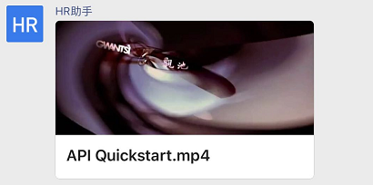
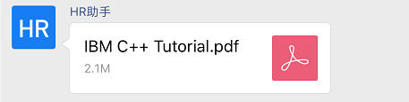
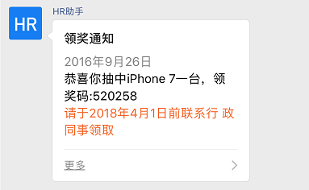
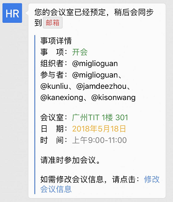

目录
接口定义
应用支持推送文本、图片、视频、文件、图文等类型。
请求方式： POST（HTTPS）
请求地址： https://qyapi.weixin.qq.com/cgi-bin/appchat/send?access_token=ACCESS_TOKEN
*请求包体: *
各个消息类型的具体POST格式参考后面消息类型说明
参数说明：
| 参数 | 是否必须 | 说明 |
|---|---|---|
| access_token | 是 | 调用接口凭证 |
权限说明：
只允许企业自建应用调用，且应用的可见范围必须是根部门。
限制说明：
chatid所代表的群必须是该应用所创建。
每企业消息发送量不可超过2万人次/分（若群有100人，每发一次消息算100人次）。未认证或小型企业不可超过 15w 人次/小时；中型企业 不可超过35w 人次/小时；大型企业 不可超过70w人次/小时。
出于对成员的保护，每个成员在群中收到的同一个应用的消息不可超过200条/分，1万条/天，超过会被丢弃，而接口不会报错。（若应用创建了两个群，成员张三同时在这两个群中，应用往第一个群发送1条消息，再往第二个群发送2条消息，则张三累计收到该应用3条消息）。
返回示例：
{ "errcode" : 0, "errmsg" : "ok" }点击复制
消息类型
文本消息
请求示例：
{ "chatid": "CHATID", "msgtype":"text", "text":{ "content" : "你的快递已到\n请携带工卡前往邮件中心领取" }, "safe":0 }点击复制
参数说明：
| 参数 | 是否必须 | 说明 |
|---|---|---|
| chatid | 是 | 群聊id |
| msgtype | 是 | 消息类型，此时固定为：text |
| content | 是 | 消息内容，最长不超过2048个字节 |
| safe | 否 | 表示是否是保密消息，0表示否，1表示是，默认0 |
文本消息展现：
特殊说明：
其中text参数的content字段可以支持换行，换行符请用转义过的'\n'。
图片消息
请求示例：
{ "chatid": "CHATID", "msgtype":"image", "image":{ "media_id": "MEDIAID" }, "safe":0 }点击复制
请求参数：
| 参数 | 是否必须 | 说明 |
|---|---|---|
| chatid | 是 | 群聊id |
| msgtype | 是 | 消息类型，此时固定为：image |
| media_id | 是 | 图片媒体文件id，可以调用上传临时素材接口获取 |
| safe | 否 | 表示是否是保密消息，0表示否，1表示是，默认0 |
图片消息展现：
语音消息
请求示例：
{ "chatid" : "CHATID", "msgtype" : "voice", "voice" : { "media_id" : "MEDIA_ID" } }点击复制
参数说明：
| 参数 | 是否必须 | 说明 |
|---|---|---|
| chatid | 是 | 群聊id |
| msgtype | 是 | 消息类型，此时固定为：voice |
| media_id | 是 | 语音文件id，可以调用上传临时素材接口获取 |
语音消息展现： 
视频消息
请求示例：
{ "chatid" : "CHATID", "msgtype" : "video", "video" : { "media_id" : "MEDIA_ID", "description" : "Description", "title": "Title" }, "safe":0 }点击复制
参数说明：
| 参数 | 是否必须 | 说明 |
|---|---|---|
| chatid | 是 | 群聊id |
| msgtype | 是 | 消息类型，此时固定为：video |
| media_id | 是 | 视频媒体文件id，可以调用上传临时素材接口获取 |
| title | 否 | 视频消息的标题，不超过128个字节，超过会自动截断 |
| description | 否 | 视频消息的描述，不超过512个字节，超过会自动截断 |
| safe | 否 | 表示是否是保密消息，0表示否，1表示是，默认0 |
视频消息展现：

文件消息
请求示例：
{ "chatid" : "CHATID", "msgtype" : "file", "file" : { "media_id" : "1Yv-zXfHjSjU-7LH-GwtYqDGS-zz6w22KmWAT5COgP7o" }, "safe":0 }点击复制
参数说明：
| 参数 | 是否必须 | 说明 |
|---|---|---|
| chatid | 是 | 群聊id |
| msgtype | 是 | 消息类型，此时固定为：file |
| media_id | 是 | 文件id，可以调用上传临时素材接口获取 |
| safe | 否 | 表示是否是保密消息，0表示否，1表示是，默认0。保密消息支持以下格式文件： txt、pdf、doc、docx、ppt、pptx、xls、xlsx、xml、jpg、jpeg、png、bmp、gif |
文件消息展现：

文本卡片消息
请求示例：
{ "chatid": "CHATID", "msgtype":"textcard", "textcard":{ "title" : "领奖通知", "description" : "<div class=\"gray\">2016年9月26日</div> <div class=\"normal\"> 恭喜你抽中iPhone 7一台，领奖码:520258</div><div class=\"highlight\">请于2016年10月10日前联系行 政同事领取</div>", "url":"https://work.weixin.qq.com/", "btntxt":"更多" }, "safe":0 }点击复制
参数说明：
| 参数 | 是否必须 | 说明 |
|---|---|---|
| chatid | 是 | 群聊id |
| msgtype | 是 | 消息类型，此时固定为：textcard |
| title | 是 | 标题，不超过128个字节，超过会自动截断 |
| description | 是 | 描述，不超过512个字节，超过会自动截断 |
| url | 是 | 点击后跳转的链接。 |
| btntxt | 否 | 按钮文字。 默认为“详情”， 不超过4个文字，超过自动截断。 |
特殊说明：
卡片消息的展现形式非常灵活，支持使用br标签或者空格来进行换行处理，也支持使用div标签来使用不同的字体颜色，目前内置了3种文字颜色：灰色(gray)、高亮(highlight)、默认黑色(normal)，将其作为div标签的class属性即可，具体用法请参考上面的示例。
文本卡片消息展现 ：

图文消息
请求示例：
{ "chatid": "CHATID", "msgtype":"news", "news":{ "articles" : [ { "title" : "中秋节礼品领取", "description" : "今年中秋节公司有豪礼相送", "url":"https://work.weixin.qq.com/", "picurl":"http://res.mail.qq.com/node/ww/wwopenmng/images/independent/doc/test_pic_msg1.png" } ] }, "safe":0 }点击复制
参数说明：
| 参数 | 是否必须 | 说明 |
|---|---|---|
| chatid | 是 | 群聊id |
| msgtype | 是 | 消息类型，此时固定为：news |
| articles | 是 | 图文消息，一个图文消息支持1到8条图文 |
| title | 是 | 标题，不超过128个字节，超过会自动截断 |
| description | 否 | 描述，不超过512个字节，超过会自动截断 |
| url | 是 | 点击后跳转的链接。 |
| picurl | 否 | 图文消息的图片链接，支持JPG、PNG格式，较好的效果为大图1068*455，小图150*150。 |
图文消息展现：
图文消息（mpnews）
mpnews类型的图文消息，跟普通的图文消息一致，唯一的差异是图文内容存储在企业微信。
多次发送mpnews，会被认为是不同的图文，阅读、点赞的统计会被分开计算。
请求示例：
{ "chatid": "CHATID", "msgtype":"mpnews", "mpnews":{ "articles":[ { "title": "地球一小时", "thumb_media_id": "biz_get(image)", "author": "Author", "content_source_url": "https://work.weixin.qq.com", "content": "3月24日20:30-21:30 \n办公区将关闭照明一小时，请各部门同事相互转告", "digest": "3月24日20:30-21:30 \n办公区将关闭照明一小时" } ] }, "safe":0 }点击复制
参数说明：
| 参数 | 是否必须 | 说明 |
|---|---|---|
| chatid | 是 | 群聊id |
| msgtype | 是 | 消息类型，此时固定为：mpnews |
| articles | 是 | 图文消息，一个图文消息支持1到8条图文 |
| title | 是 | 标题，不超过128个字节，超过会自动截断 |
| thumb_media_id | 是 | 图文消息缩略图的media_id, 可以通过素材管理接口获得。此处thumb_media_id即上传接口返回的media_id |
| author | 否 | 图文消息的作者，不超过64个字节 |
| content_source_url | 否 | 图文消息点击“阅读原文”之后的页面链接 |
| content | 是 | 图文消息的内容，支持html标签，不超过666 K个字节 |
| digest | 否 | 图文消息的描述，不超过512个字节，超过会自动截断 |
| safe | 否 | 表示是否是保密消息，0表示否，1表示是，默认0 |
图文消息展现： 
markdown消息
目前仅支持markdown语法的子集
微信插件（原企业号）不支持展示markdown消息
请求示例：
{ "chatid": "CHATID", "msgtype":"markdown", "markdown": { "content": "您的会议室已经预定，稍后会同步到`邮箱` \n>**事项详情** \n>事 项：<font color=\"info\">开会</font> \n>组织者：@miglioguan \n>参与者：@miglioguan、@kunliu、@jamdeezhou、@kanexiong、@kisonwang \n> \n>会议室：<font color=\"info\">广州TIT 1楼 301</font> \n>日 期：<font color=\"warning\">2018年5月18日</font> \n>时 间：<font color=\"comment\">上午9:00-11:00</font> \n> \n>请准时参加会议。 \n> \n>如需修改会议信息，请点击：[修改会议信息](https://work.weixin.qq.com)" } }点击复制
参数说明：
| 参数 | 是否必须 | 说明 |
|---|---|---|
| chatid | 是 | 群聊id |
| msgtype | 是 | 消息类型，此时固定为：markdown |
| content | 是 | markdown内容，最长不超过2048个字节，必须是utf8编码 |
示例效果：
